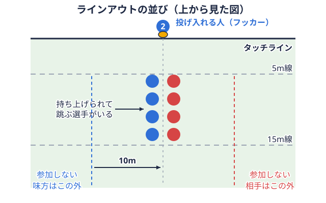

キャリア 2026-11-16
大学ラグビー部の学生アナリスト経験はキャリアにどう活きる？分析担当の仕事内容と卒業後の選択肢
大学ラグビー部には、グラウンドでプレーする選手のほかに、映像やデータを使ってチームを支える「アナリスト（分析担当）」という役割があります。試合や練習を撮影し、プレーを数え、対戦相手の傾向を調べて、指導陣や選手に伝える仕事です。この記事では、学生アナリストがどのような業務を担い、どんな力が身につくのか、そしてその経験を卒業後のキャリアにどうつなげられるのかを整理します。すでに卒業したOB・OGの方が、自分の経験を振り返る材料としても読める内容にしています。
大学ラグビー部の「学生アナリスト」とは
フィールドの外からチームを支える役割
アナリストは、プレーの映像や数値をもとにチームの現状と相手の特徴を把握し、勝つための判断材料を用意する役割です。早稲田大学の広報メディア「早稲田ウィークリー」は、ラグビー蹴球部の学生アナリストを、フィールドの外からプレーの分析でチームを支える存在として紹介しています（2022年11月14日掲載）。同記事によると、その業務はプレーの撮影から対戦相手の分析まで幅広く、試合中は監督やコーチとともにスタンドからプレーを見守り、ハーフタイムに選手へ見せる前半の映像の編集を、その場で任されることもあるとされています。
もちろん、こうした体制はすべての大学に共通するものではありません。専任の分析スタッフを置くチームもあれば、マネージャーやケガで離脱中の選手が撮影・分析を兼ねるチームもあります。呼び名も「アナリスト」「分析」「テクニカル」などさまざまです。ここでは、役職名にかかわらず「映像とデータでチームを支えた経験」全般を対象に考えます。
主な業務内容
チームによって幅はありますが、学生アナリストの業務はおおむね次のように整理できます。
| 業務 | 内容の例 |
|---|---|
| 撮影 | 試合・練習の映像を撮る。機材の準備と管理も含む |
| 記録・集計 | タックルボールを持つ相手をつかんで地面に倒すプレー。倒したあとは、すぐにボールから離れなければならない。用語辞典で見る、ラインアウトボールが横のライン（タッチライン）の外に出たあとの再開方法。2列に並び、投げ入れたボールを取り合う。  用語辞典で見る、スクラム試合が止まったあとの再開方法。両チーム8人ずつが体を組み合わせて向かい合い、間に入れたボールを足で奪い合う。 用語辞典で見る、反則などを映像から数える 用語辞典で見る、反則などを映像から数える |
| 自チームの振り返り | 良かった場面・課題の場面を切り出し、ミーティング用にまとめる |
| 対戦相手の分析 | 過去の試合映像から、攻め方・守り方・セットプレースクラムやラインアウトのように、プレーが止まったあと決まった形で再開する場面。用語辞典で見るの傾向を調べる |
| 共有・報告 | 指導陣や選手に、必要な映像と数字を分かりやすい形で渡す |
分析の内容を理解するには、戦術用語の知識も欠かせません。用語に自信がない方はラグビー戦術用語50選もあわせて確認しておくと、映像を見る解像度が上がります。
学生アナリストの経験で身につく力
1. 事実をもとに課題を見つける力
「今日はタックルが悪かった」という印象を、「どの時間帯に、誰が、どの位置で外されたのか」という事実に置き換えるのがアナリストの仕事です。感覚ではなく記録から課題を特定し、原因を掘り下げる習慣は、どの職種でも求められる基礎的な力です。
2. 相手に合わせて伝える力
分析は、伝わって初めて意味を持ちます。監督には全体の傾向を、ポジションごとのリーダーには担当領域の具体的な場面を、試合直前の選手には要点だけを、というように、相手と場面に応じて情報の量と形を変える必要があります。大量の映像と数字から「いま必要な3つ」に絞り込む経験は、社会に出てからの報告や提案の場面でそのまま役に立ちます。
3. 締め切りの中でやり切る力
試合は毎週やってきます。週末の試合を撮影し、週明けのミーティングまでに振り返りを仕上げ、週の半ばまでに次の相手の分析を出す、というサイクルを、授業と並行してシーズン中ずっと回し続けることになります。ハーフタイムのような数分単位の締め切りに対応する場面もあります。期限が動かせない中で優先順位をつけ、一定の品質で出し続けた経験は、強い実績になります。
4. ツールを使いこなし、仕組みを整える力
映像編集や分析用のソフト、表計算、クラウドでの共有など、道具を覚えて運用に乗せるのもアナリストの役割です。前任者のやり方を引き継ぎ、より短い時間で同じ結果が出るように手順を見直した経験があれば、それは業務改善そのものです。
経験を卒業後のキャリアにつなげる考え方
データ・企画・マーケティング系の仕事
事実を集め、傾向を読み、次の打ち手を提案するという流れは、企業の企画やマーケティング、営業企画、データ分析といった仕事と構造がよく似ています。大切なのは「分析をしていました」で終わらせず、次の3点をセットで語れるようにしておくことです。
- 何を調べたか：対象と方法（例：直近の試合映像から相手のラインアウトの傾向を集計した）
- どう伝えたか：誰に、どんな形で渡したか
- 何が変わったか：チームの判断や準備がどう変わったか
勝敗は多くの要因で決まるため、「自分の分析で勝った」と言い切る必要はありません。自分の仕事がチームの意思決定にどう使われたかを、具体的に説明できれば十分です。
エンジニア・IT系の仕事
集計の自動化や映像の管理など、技術的な工夫に面白さを感じた方は、IT・技術職との相性も考えてみる価値があります。文系・理系を問わない考え方はラグビー部出身者は技術職・エンジニアに向いている？で整理しています。
スポーツの現場で分析を続ける道
卒業後もアナリストとしてスポーツに関わる道もあります。国内には、競技の枠を越えてスポーツアナリスト同士の連携や育成に取り組む一般社団法人日本スポーツアナリスト協会（JSAA）のような団体があり、分析という仕事が一つの専門職として認知されるようになってきました。ただし、チームの分析スタッフは募集枠が限られ、採用の時期や条件もチームごとに異なります。目指す場合は、各チーム・団体の公式発表を自分で確認し、学生のうちから現場経験と人とのつながりを積み重ねておくことが現実的です。ラグビーに関わる仕事全体の見取り図はラグビー部出身者がスポーツ業界で働くには？にまとめています。
すでに社会人になったOB・OGの方へ
学生時代の分析経験は、時間が経っても色あせにくい資産です。いまの仕事で「数字や事実をもとに話す」「要点を絞って伝える」ことを自然にできているなら、それは部活動で身につけた強みかもしれません。キャリアを見直すときは、役職名ではなく「どんな作業が得意で、どんな場面で人の役に立てたか」という単位で棚卸しをすると、次の選択肢が見えやすくなります。部活動の経験全般を仕事にどう結びつけるかは、大学ラグビー部出身者が仕事で活かせる強みとは？も参考にしてください。
現役部員が今からできること
- 成果物を残す：作成したレポートや集計表は、個人情報やチームの機密に配慮したうえで、どんなものを作ったか説明できるように記録しておく
- 手順を文書にする：撮影から共有までの流れをマニュアル化する。引き継ぎにも、自分の実績の整理にも役立つ
- 使われ方を確かめる：分析が指導陣や選手にどう使われたかを聞き、次の改善につなげる
- 部の外に目を向ける：他競技の分析手法や、公開されている勉強会・講習の情報に触れてみる
なお、同じく選手以外の立場でチームを支える役割として、学生トレーナーの経験とキャリアについても別の記事で整理しています。
まとめ
大学ラグビー部の学生アナリストは、映像とデータを通じてチームの判断を支える役割です。事実から課題を見つけ、相手に合わせて伝え、毎週の締め切りの中でやり切るという経験は、データ・企画系の仕事から技術職、スポーツの現場まで、幅広いキャリアの土台になります。体制や呼び名は大学によって異なりますが、「何を調べ、どう伝え、何が変わったか」を自分の言葉で語れるようにしておくことが、経験を次につなげる第一歩です。
出典
体育会出身の転職・キャリアに関心のある方へ
部活を続けながら、就活も進めたい方へ
体育会の学生のための就活相談です。無料で、メールアドレス・学年・所属の入力だけで始められます。